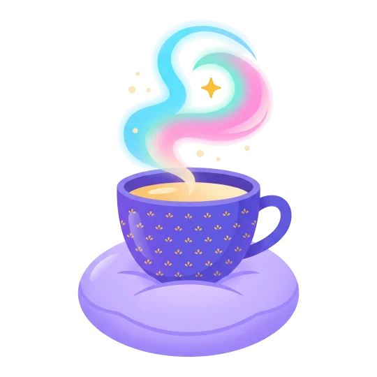

Musica per concentrarti

Tutto libero ✨
Aggiungi la tua prima attività con il pulsante qui sotto.
Completate oggi 0
Prossimi giorni
Da pianificare
La tua settimana
Settimana scorsa
I tuoi premi
0 da spendere
Scegli come premiarti, con il prezzo in punti: quando ne hai abbastanza, lo riscatti.
Hai 30 premi, il massimo: per aggiungerne un altro, eliminane uno.
Riscattati 0
Spendere punti non ti fa scendere di livello: il livello conta tutti i punti guadagnati.
Negozio
0 da spendere
I tuoi numeri
I minuti di focus arrivano da «Inizia focus», in «Cosa faccio adesso?» o nel foglio di un'attività.
Completate 0
I dati restano solo su questo dispositivo.
Prova della voce (provvisoria)